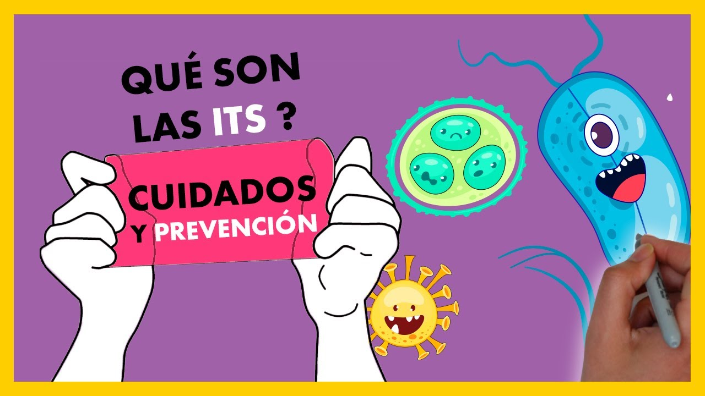

Enfermedades de Transmisión Sexual - ETS
Las enfermedades de transmisión sexual -ETS- (que anteriormente se conocían como enfermedades venéreas), son infecciones que se contagian de una persona a otra usualmente durante el sexo vaginal, anal u oral. Son muy comunes y muchas personas con ETS no tienen síntomas. Por eso, es importante hacerte exámenes sin importar si tienes síntomas de las ETS o no. Sin tratamiento, las enfermedades de transmisión sexual pueden causar serios problemas de salud. La buena noticia es que hacerte los exámenes no es complicado y la mayoría de estas infecciones son fáciles de tratar.

Lista de ETS:
- clamidia
- gonorrea
- herpes genitales
- virus del papiloma humano-(VPH)
- sifilis
- sida-VIH